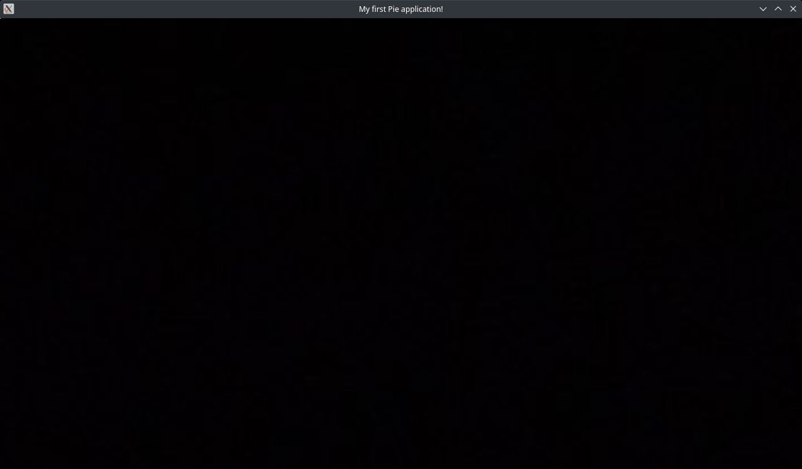
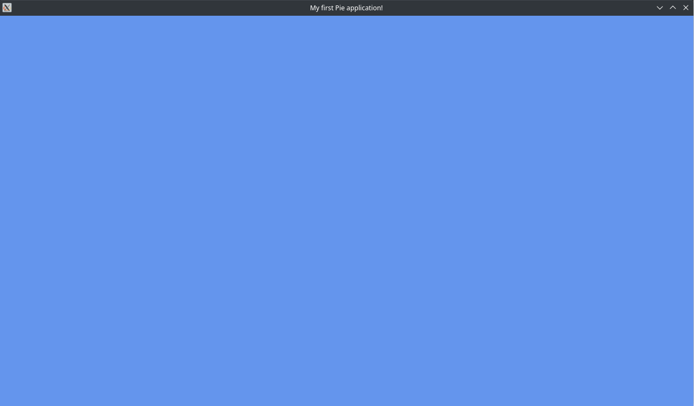

Creating a Window
Note
The source code for this tutorial can be found here.
Introduction
The first part of your journey into Pie will be to create a window and graphics device! The two most essential things for your application to function.
In a Pie application, the window is responsible for processing events, handling input, and of course, displaying the result to the user. The graphics device is responsible for doing the heavy lifting graphics-wise, creating buffers and issuing draw calls.
Installing Pie
Before we can get started, you'll need to install Pie. Fortunately, Pie is available as a nuget package.
For this tutorial, we will only need two packages:
We are assuming you already have a project set up, and are using the dotnet cli. If you're not, it's assumed you already know how to install packages using your chosen IDE.
In the terminal, type the following:
dotnet add package Pie
dotnet add package Pie.Windowing
You're now ready to get started!
Creating a window
Let's create a window!
For this tutorial, we're going to assume you're using the standard .NET 6 Program.cs file.
Add the following using directives to the top of your file:
using Pie;
using Pie.Windowing;
The window settings
Before we can create a window, we need to set up some WindowSettings. These settings describe how the window should look and behave when it opens. Most of these settings can be changed after the window has opened.
Start by adding the following to your file:
WindowSettings settings = new WindowSettings()
{
Size = new Size(1280, 720),
Title = "My first Pie application!",
Resizable = true
};
Most of these parameters should be fairly obvious, but we'll go through them anyway.
- Size - The initial size in pixels (aka resolution) of the window.
- Title - The initial title (the text at the top) of the window.
- Resizable - Whether or not the window will be resizable. Note: unfortunately, you cannot change this parameter once the window has opened (this is a limitation of the backend windowing system).
There are a few more parameters not used here, so take a look at the API doc for all the parameters you can set.
Creating the window
Now that we've told the window how to behave, the next thing we need to do is create the window itself!
Add the following to your file:
Window window = Window.CreateWindow(settings);
Once you've added this, there is technically enough code for a functioning window. If you click run though, you'll notice that the window will pop up for a brief second, then disappear again. To solve this, we need to create the application loop.
The application loop
As the name suggests, the application loop is a simple while loop. However, to get the window functioning properly, we need to add a few things.
Window.ShouldClose
This is a very important property of the Window class, for the application loop. As the name suggests, this property is set true when the window wants to close. This generally occurs when the window's X/close button is pressed.
You can, however, also set this value manually. Setting this will cause the application to gracefully close.
So how does this fit into our application loop?
We want to keep the game loop running until the window wants to close. After that, close the window, and clean all resources.
Add the following code to your file:
while (!window.ShouldClose)
{
}
Now, launch your application again and behold!

A lovely window.
But there's a problem. Try clicking the close button. No? How about the resize button. Try doing anything at all with the window..? Hmm... What's going on here?
The issue is that nothing is telling the window to handle these actions. Therefore, we need to manually tell it to do this.
Window.ProcessEvents()
Another very important function of the Window class. This tells the window to process all events it recieves, whether that be input, or the closing event.
You may notice that this function returns a value. This is very useful for input, however we'll ignore it for now and just call the function on its own.
Add the following to your application loop:
window.ProcessEvents();
Now try running your application again. If everything has gone right, you should be able to close and resize your window!
The last thing you'll want to do (and you don't have to, it's just for good practice) is to add window.Dispose(); to the end of your file. This will free all the unmanaged resources the window has created. In this example, you could surround Window.CreateWindow() in a using statement to achieve the same effect, however Pie is not typically used in the same way we have used in this example, so in 99% of applications a using statement around the window is not possible.
Okay, let's create the graphics device!
Creating the graphics device
As mentioned earlier, the GraphicsDevice is where all graphics commands are issued.
Creating a graphics device from an existing window is very easy. Simply call Window.CreateGraphicsDevice().
Add the following underneath your Window.CreateWindow() code:
GraphicsDevice device = window.CreateGraphicsDevice();
Clearing & presenting
The two basic things you need to sucessfully render a scene are clearing and presenting.
Clearing isn't strictly necessary but it will make your life harder if you don't use it, especially when it comes to things such as depth.
Clearing the window
Every window contains several framebuffers that get used for rendering. You'll sometimes hear this referred to as the back buffer. There are three main framebuffers every window will contain:
- Color buffer
- Depth buffer
- Stencil buffer
The window will contain multiples of each buffer, so it can render to one set of buffers while presenting another set. This is called a swap chain. In many graphics APIs, you are required to create and manage these buffers yourself. Fortunately, Pie manages these buffers itself, and the only thing you need to do is tell them when to resize (which we'll get into later).
When a new frame starts, you'll often want to clear these framebuffers so they are ready for rendering again. As such, Pie allows you to clear the three framebuffers. You can clear any combination you would like.
Add the following code underneath your window.ProcessEvents() line:
device.Clear(Color.CornflowerBlue);
Make sure you add using System.Drawing; at the top of your file as well.
As we are not using depth or stencil, we can just clear the color buffer. Color buffers must always be cleared to a color, which is often black, as for most games and applications this buffer is covered by geometry and other objects. For this example, since we can see the buffer, we'll clear it to a nice sky blue color.
Note
If you wanted to clear the depth and stencil buffers, you can add device.Clear(Color.CornflowerBlue, ClearFlags.Depth | ClearFlags.Stencil) instead. This uses a bitwise flag to determine which to clear, and you can remove any flag you want if you don't wish to clear it. You can also call device.Clear() without a color if you wish to not clear the color buffer.
Let's try running our application again. Hmm... Nothing yet. There's still something we're missing.
Presenting
The final step in rendering is always presenting to the window. Presenting, as the name may suggest, presents the contents of the current color buffer to the window, so the user can see it. We don't need the depth or stencil buffer at this stage, since these buffers are used to let the graphics device work out where and how things are drawn to the color buffer.
Add the following code at the bottom of your while loop:
device.Present(1);
Present() takes a integer parameter, that we've set to 1. This is the swap interval, and this synchronizes the presentation after the given number of vertical blanks. This is often called vertical sync or VSync. Setting this value to 1 will synchronize it to the monitor's refresh rate, often 60 or 144hz. Setting this value to 0 will disable VSync and will render as fast as possible, often into the thousands of FPS.
After adding this, if all is done correctly, you'll see a nice blue window!

Finally, much like the window, you can add device.Dispose() to the end of your file. Much like the window, this is not strictly necessary, however is good practice to get into.
Note
You must dispose the device before disposing the window. If you do it the other way round, you may get native crashes.
Resizing the swapchain
When the window is resized, the swapchain won't automatically resize with it.
Currently, if you try resizing the window, you may think that it's all working fine. However the back buffer color works independently of the main swapchain, and you will notice issues if you try to render to it.
Fortunately, resizing the swapchain is very easy.
The window resize event
Pie windows contain a resize event that gets called whenever the window is resized. We'll use this to determine what size the swapchain should be resized to.
Add the following code after you create the graphics device:
window.Resize += size =>
This will create a link to the resize event that we will now use to resize the swapchain.
GraphicsDevice.ResizeSwapchain()
As you may have guessed, we'll call this function to resize the main swapchain itself.
Add the following code to the end of the event link you just added:
device.ResizeSwapchain(size);
And that's it! You won't notice much right now, but it will be very helpful once we start rendering to the window.
If you want, you can move on to the next tutorial, where we render a basic quad! Or, if you would like to know a few more helpful bits, keep reading on!
A quicker way to create a window and graphics device
So far, we've created a window, then created a graphics device. However, Pie has a method that does this all in one.
Replace the two lines where you create the window and graphics device with the following line:
Window window = Window.CreateWithGraphicsDevice(settings, out GraphicsDevice device);
It's likely you will end up using this far more than creating a window, then a graphics device. However, the option is still there for users who want it, as creating a window and graphics device all at once isn't always the most convenient.
Choosing a graphics API
As you may have seen, Pie supports the following graphics APIs:
- Direct3D 11
- OpenGL 3.3
So far, we haven't explicitly told Pie which API we want to use. So what API is it using, and how do we tell it which one we want?
By default, Pie will work out the best API to use based on the current platform and system configuration.
- Windows - Direct3D 11 is used by default.
- Linux/macOS - OpenGL 3.3 is used by default.
Explicitly choosing an API
If you wish to override the default API choice, you can do so in the window creation functions.
Replace your window & graphics device creation function with the following:
Window window = Window.CreateWithGraphicsDevice(settings, GraphicsApi.D3D11, out GraphicsDevice device);
This will create a Direct3D 11 graphics device. If you're on Linux/macOS, this will crash, as they do not support Direct3D 11.
Now try GraphicsApi.OpenGl33 instead. This will create an OpenGL 3.3 graphics device. On windows, you should notice no difference. On Linux/macOS, your window will now open to the nice familliar blue you saw before.
Platform & API differences
Pie has been specifically designed for there to be as few platform & API differences as possible, so you can write your code once and it will run the same no matter which platform & API you choose. So far, there are no known differences in behaviour between the two supported APIs when using Pie. We aim to stick with this going forward!
Wrapping up
The graphics device options
You may have noticed an overload on device creation which accepts graphics device options. The default options are fine most of the time, however if you would like you can customize whether debugging is enabled, as well as choosing a few startup swapchain options, and a few other things, that we won't cover here. You can see all available options at the API doc.
If you've come this far, awesome! You've now got the basics for starting to create a graphical application using Pie!
You can now move on to the next tutorial, where we will render a basic quad to the screen.